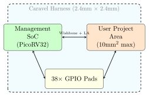

Chapter 10: PDKs and Fabrication¶
Every time a chip designer runs synthesis or place-and-route, the tools need detailed information about the manufacturing process: How thick are the metal layers? How fast is a NAND gate? How much leakage current does a flip-flop have? This information is packaged into a Process Design Kit (PDK).
Analogy: PDK as a Builder’s Catalogue
When an architect designs a building, they choose materials from a supplier’s catalogue: “Steel beam grade A36, yield strength 250 MPa, cost $X per tonne.” A PDK is exactly that catalogue for transistors and metal wires. It tells the design tools exactly what the foundry can make, how fast each cell switches, how much power it draws, and what design rules must not be violated.
10.1 The Three PDKs Used in This Project¶
| PDK | Foundry | Node | Cost | Min gate (nm) |
|---|---|---|---|---|
| sky130A | SkyWater / Google | 130nm | Free (MPW shuttle) | 150 |
| gf180mcuD | GlobalFoundries | 180nm | Free (MPW shuttle) | 180 |
| asap7 | Academic (ASU) | 7nm | Free (simulation only) | 7 |
Sky130A is the recommended PDK for beginners. It is fully open source, well documented, and backed by a free tapeout programme (see Section 10.7).
10.2 What Is Inside a PDK?¶
A PDK contains several categories of files:
10.2.1 Standard Cell Library¶
The standard cell library is the collection of basic logic gates and flip-flops that the synthesis tool uses. For Sky130A, the library is called sky130_fd_sc_hd (High Density).
| File type | Extension | Used for |
|---|---|---|
| Liberty timing file | .lib / .db |
Synthesis timing constraints, STA |
| LEF abstract view | .lef |
Cell bounding box and pin locations |
| GDS layout view | .gds |
Final physical shape for each cell |
| Verilog model | .v |
Functional simulation after synthesis |
| SPICE netlist | .sp |
Transistor-level simulation |
A Liberty file entry for a 2-input NAND gate looks like:
cell (sky130_fd_sc_hd__nand2_1) {
area : 3.75; /* area in um^2 */
cell_leakage_power : 0.0031;
pin(A) { direction : input; }
pin(B) { direction : input; }
pin(Y) {
direction : output;
function : "!(A&B)";
timing() {
related_pin : "A";
cell_rise(delay_template_7x7) {
/* 7x7 table: input slew vs. output load */
values ("0.028, 0.053, ...", ...);
}
}
}
}
10.2.2 Design Rule Check (DRC) Rules¶
DRC rules define the geometric constraints that the foundry’s photolithography process imposes. Violating them means the chip cannot be manufactured correctly.
| Rule type | What it checks |
|---|---|
| Minimum width | Metal/poly wires must be at least \(N\) nm wide |
| Minimum spacing | Adjacent wires must have at least \(N\) nm gap |
| Minimum enclosure | Via must be enclosed by at least \(N\) nm of metal |
| Minimum area | Metal regions below a minimum area must not exist |
| Density | Metal fill must cover between X% and Y% of each tile |
For Sky130A, the DRC rules are checked with Magic VLSI or KLayout:
# Using Magic VLSI
magic -rcfile $PDK_ROOT/sky130A/libs.tech/magic/sky130A.magicrc \
-noconsole -dnull << 'EOF'
gds read /path/to/design.gds
load design
drc check
drc catchup
quit
EOF
# Using KLayout (faster for large designs)
klayout -b -r $PDK_ROOT/sky130A/libs.tech/klayout/drc/sky130A.lydrc \
-rd input=/path/to/design.gds \
-rd report=/path/to/drc_report.xml
10.2.3 Layout vs. Schematic (LVS)¶
LVS compares the physical layout (extracted from GDS) against the logical netlist to make sure they describe the same circuit. This catches situations where a wire was accidentally deleted or a via was missing.
# Extract SPICE netlist from layout
magic -rcfile $PDK_ROOT/sky130A/libs.tech/magic/sky130A.magicrc \
-noconsole -dnull << 'EOF'
gds read /path/to/design.gds
load design
extract all
ext2spice lvs
ext2spice
quit
EOF
# Compare extracted netlist to schematic netlist with Netgen
netgen -batch lvs \
"/path/to/design.ext.spice design" \
"/path/to/synthesis.spice design" \
$PDK_ROOT/sky130A/libs.tech/netgen/sky130A_setup.tcl \
/path/to/lvs_report.txt
Passing DRC + LVS is the minimum requirement before any chip is submitted for fabrication. They are collectively called signoff checks.
10.3 Sky130A — The Free 130nm PDK¶
Sky130A was released as open source in 2020 through a partnership between SkyWater Technology (a US foundry) and Google. It is the first commercial PDK released without an NDA.
10.3.1 Layer Stack¶
Sky130A uses 5 metal layers plus local interconnect:
| Layer | Name in PDK | Purpose | Min width (nm) |
|---|---|---|---|
| Local Interconnect | li1 |
Cell-level wiring | 170 |
| Metal 1 | met1 |
Primary signal routing | 140 |
| Metal 2 | met2 |
Secondary signal routing | 140 |
| Metal 3 | met3 |
Regional routing | 300 |
| Metal 4 | met4 |
Long horizontal wires | 300 |
| Metal 5 | met5 |
Power rails | 1600 |
10.3.2 Setting Up the PDK¶
# Install volare (PDK version manager)
pip install volare
# Fetch the Sky130A PDK
export PDK_ROOT=$HOME/pdks
volare enable --pdk sky130 \
--pdk-root $PDK_ROOT \
bdc9412b3e468c102d01b7cf6337be06ec6e9c9a
# Verify installation
ls $PDK_ROOT/sky130A/libs.ref/sky130_fd_sc_hd/
# Should show: lib/ lef/ gds/ verilog/ spice/
10.4 GF180MCU — GlobalFoundries 180nm¶
The GF180MCU PDK supports GlobalFoundries’ 180nm CMOS process, which is optimised for microcontroller and mixed-signal designs. It provides:
-
5V and 3.3V I/O cells
-
Precision resistors and MIM capacitors
-
EEPROM-compatible process options
-
Four standard-cell libraries (HD, HS, HV, LV)
export PDK_ROOT=$HOME/pdks
volare enable --pdk gf180mcu \
--pdk-root $PDK_ROOT \
e0f692f46654d6c7c99fc70a0c94a080dab53571
10.5 ASAP7 — Academic 7nm PDK¶
ASAP7 is an academic PDK developed by Arizona State University (ASU) and ARM Research. It models a realistic 7nm FinFET process but is intended for research and education only — not for actual fabrication. It is useful for studying how area, power, and timing scale from 130nm to 7nm.
| Metric | Sky130A (130nm) | ASAP7 (7nm) |
|---|---|---|
| NAND2 cell area | 3.75 m\(^2\) | 0.038 m\(^2\) |
| NAND2 cell delay | \(\sim\)100 ps | \(\sim\)5 ps |
| VDD | 1.8 V | 0.7 V |
| Max frequency | \(\sim\)250 MHz | \(\sim\)3 GHz |
# OpenROAD config for ASAP7 (from pdk/asap7/asap7_openroad_config.mk)
export PDK=asap7
export PLATFORM=asap7
export TECH_LEF=$PDK_ROOT/asap7/tech/asap7_tech_1x_201209.lef
export SC_LEF=$PDK_ROOT/asap7/lib/asap7sc7p5t_28_R_1x_220121a.lef
export LIB_FILES=$PDK_ROOT/asap7/lib/asap7sc7p5t_SEQ_RVT_TT_nldm_220123.lib
10.6 The Tapeout Process¶
A tapeout is the point at which a design is submitted to the foundry for manufacturing. The term dates from the era when chip data was literally written onto magnetic tape for delivery to the fab.
10.6.1 Steps to Tapeout¶
-
Design Freeze: All features locked, no more RTL changes.
-
Full LVS + DRC Clean: Zero violations on the complete chip.
-
Antenna Check Clean: All antenna violations resolved.
-
Density Fill: Metal fill added to reach required density.
-
Final STA: Setup and hold checks pass at all corners.
-
GDS Merge: All IP blocks merged into single top-level GDS.
-
Final DRC on Merged GDS: Full-chip DRC one last time.
-
Submit: GDS + LEF + Netlist sent to foundry.
Tapeout Is Irreversible — Check Everything Twice
Once a chip is submitted, it takes 8–16 weeks to come back from the foundry. Any bug in the design is “baked in” permanently. There is no patch, no firmware update. This is why verification (Chapter 7) and signoff checks are taken so seriously. Professional teams run DRC/LVS dozens of times before tapeout.
10.6.2 Corner Analysis¶
Chips must work across a range of process, voltage, and temperature variations. This is called PVT corner analysis.
| Corner | Process | Voltage | Temperature |
|---|---|---|---|
| TT (Typical-Typical) | Nominal | Nominal | \(25^{\circ}\)C |
| FF (Fast-Fast) | Fastest | 1.98V | \(-40^{\circ}\)C |
| SS (Slow-Slow) | Slowest | 1.62V | \(125^{\circ}\)C |
| FS (Fast-Slow) | Fast-N / Slow-P | Nominal | \(25^{\circ}\)C |
| SF (Slow-Fast) | Slow-N / Fast-P | Nominal | \(25^{\circ}\)C |
The SS corner at \(125^{\circ}\)C is used for setup time checks (slowest logic). The FF corner at \(-40^{\circ}\)C is used for hold time checks (fastest logic, clock arrives early, data may overtake it).
10.7 Efabless and the MPW Shuttle¶
Efabless runs a programme called the Multi-Project Wafer (MPW) shuttle that allows individual designers to tapeout a chip for free (or at very low cost). Multiple designers share a single wafer run.
10.7.1 The Caravel Harness¶
Every design submitted to the Efabless MPW must be wrapped inside a standard template called the Caravel harness. Caravel provides:
-
A RISC-V (PicoRV32) management core for chip configuration.
-
38 general-purpose I/O (GPIO) pins with configurable direction.
-
A 2.4 mm \(\times\) 2.4 mm user project area for your design.
-
A Wishbone bus and Logic Analyser (LA) connection to the management core.

10.7.2 Submitting to MPW¶
# 1. Clone the Caravel user project template
git clone https://github.com/efabless/caravel_user_project
# 2. Copy your design into user_project_wrapper
# (your GDS must fit inside the 2.4mm x 2.4mm area)
cp my_design.gds caravel_user_project/gds/
# 3. Run the full OpenLane hardening flow
cd caravel_user_project
make user_project_wrapper
# 4. Run the Efabless pre-check (mandatory before submission)
make precheck
# 5. If precheck passes, submit via the Efabless platform
# (web dashboard at efabless.com)
10.8 Reading a GDSII File¶
GDSII (Graphic Design System II) is the standard file format for chip layouts. It contains polygons, paths, and cell instances organised into a hierarchical structure.
# Open GDS in KLayout GUI
klayout /path/to/design.gds
# In KLayout: Layer panel shows all layers (met1, met2, poly, ndiff...)
# Use Ctrl+F to search for cell names
# Ruler tool (R) to measure distances
# Extract area statistics from command line
klayout -b -r - << 'EOF'
layout = RBA::Layout.new
layout.read("/path/to/design.gds")
layout.each_cell { |cell|
puts "#{cell.name}: #{cell.bbox}"
}
EOF
# Merge multiple GDS files (from gdsii/scripts/gds_merge.py)
python gdsii/scripts/gds_merge.py \
--top top_level.gds \
--subs my_design.gds \
--out merged.gds
10.9 Metal Fill and Density Rules¶
Most foundries require the metal density in every 100m \(\times\) 100m tile to fall between a minimum (typically 20%) and maximum (typically 80%). If your design is sparse, the tools insert floating metal fill — small, electrically isolated metal squares — to meet the density requirement.
# Run density fill for all metal layers
detailed_placement
check_placement -verbose
density_fill \
-rules $PDK_ROOT/sky130A/libs.tech/openlane/rules.fill.tcl
write_def design_with_fill.def
Fill Affects Capacitance
Metal fill is electrically floating but adds parasitic capacitance to nearby signal wires. For high-speed designs, extract parasitics after fill insertion and re-run STA to verify timing is not degraded.
10.10 The Signoff Checklist¶
The file gdsii/drc-lvs/drc_checklist.md in this project contains the full tapeout checklist. The key items are:
-
DRC: Zero errors in Magic and KLayout.
-
LVS: Netlist matches layout, zero mismatches.
-
Antenna: Zero antenna violations (or approved waives).
-
ERC: No floating gates, no latch-up paths.
-
STA — Setup: WNS \(\geq 0\) at SS/\(125^{\circ}\)C corner.
-
STA — Hold: WNS \(\geq 0\) at FF/\(-40^{\circ}\)C corner.
-
Density: All tile densities between 20% and 80%.
-
IR Drop: Maximum rail drop \(< 5\%\) VDD.
-
GDS: File opens cleanly in KLayout, all layers present.
-
Functional: Simulation passes on extracted (post-layout) netlist.
10.11 Summary¶
-
A PDK packages everything the tools need to know about a manufacturing process: timing, area, rules, layer stacks.
-
Sky130A is free and open-source — the recommended starting point for anyone new to ASIC design.
-
DRC and LVS checks are mandatory before tapeout; failing either means the chip cannot be manufactured.
-
PVT corner analysis ensures the design works in the worst-case combination of process variation, voltage, and temperature.
-
The Efabless MPW shuttle lets individuals tapeout real chips at no cost using the Caravel harness wrapper.
-
GDSII is the final output format; tools like KLayout and Magic are used to view and verify it.
The next and final chapter covers how all these steps are automated together into a single, reproducible pipeline.